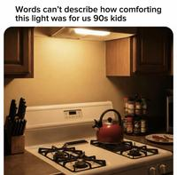
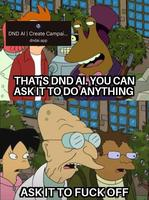

0
0




Elon Musk confirmed SpaceX has open sourced the Grok Build CLI this week, reports The Register, "just days after researchers caught the AI tool scooping up users' entire repositories and uploading them to company-controlled cloud storage."
That discovery had "gathered so much negative attention that Elon Musk felt compelled to issue a public statement alongside SpaceX, and its technical staff, promising to delete all data that Grok Build has ever stored and give users more choice over how their data is handled."
SpaceXAI's data grab was first publicized Sunday [July 12] by Cereblab, who probed Grok Build traffic and found that repos were being packaged up as Git Bundles and beamed to Google Cloud storage... [Elon Musk] said SpaceX would open-source Grok Build to sow greater trust in the product, after the codebase was audited for security vulnerabilities... ["Open-sourcing Grok Build allows anyone to support making a reliable and robust harness," SpaceX posted on X.com. "Check out our code, including the Git repo for the Grok Build CLI."]
In a separate statement accompanying the open source announcement, SpaceX said it has always respected Zero Data Retention (ZDR), which was applied to enterprise customers by default, and acknowledged that data retention was enabled by default for everyone else, which has now been corrected. It said: "In response to user questions about privacy: Since launch, Grok Build has fully respected zero data retention (ZDR). All users have always had the ability to disable data upload in the CLI. When data upload was disabled, this choice was respected. In the early beta, data retention was enabled by default for non-ZDR users. Based on your feedback, we changed this. We are now going further to protect privacy. With all retained data deleted, retention default off, and an open-source harness, we are offering complete user privacy. You can also run Grok Build fully open-sourced and local-first with your own inference.
"We disabled default retention for all Grok Build users starting on July 12th. Additionally, we are deleting all coding data that was previously retained, ensuring every user's preferences are respected. With these steps, Grok Build goes beyond other major coding products to protect user privacy."
SpaceX also invited researchers to probe Grok Build for security issues and report them to its bug bounty program, which offers rewards ranging from $100-$20,000, depending on the severity.
The article notes Simon Willison, creator of Datasette and co-creator of Django, wrote this week that the Grok Build codebase comprises 844,530 lines of Rust code. "There are still remnants of the code that used to upload everything to Google Cloud," Willison writes, "but they seem to have been disabled now."
Elon Musk also posted Wednesday that "Once we have completed our review for security vulnerabilities, we will make the entire codebase of X open source, with no exceptions. Moreover, we will invite third party reviewers to examine the system that is running to confirm that the open source code is what is running."
Read more of this story at Slashdot.
France's regulatory authority for licensed gambling/betting games "announced this week that it ordered ISPs to block access to Polymarket," reports Engadget. Anyone caught advertising an unauthorized betting site "could be fined up to 100,000 euros, or around $114,000." (The article notes this follows a previous regulatory action from November placing a geoblock on financial transactions from French residents on Polymarket's site.)
In May Spain blocked access to Polymarket and Kalshi while it launched a gambling license investigation.
Read more of this story at Slashdot.
An anonymous reader quotes a report from the New York Times: Australia will require large data centers powering artificial intelligence to generate as much power as they consume, and ensure that creative professionals retain control over work that may be used to train A.I. systems, as the government sets up guardrails over the rapidly growing industry. The announcements on Wednesday in a speech by Prime Minister Anthony Albanese came as Australia draws significant interest from A.I. companies because of its size and the availability of renewable energy, and as resistance to data centers builds in many parts of the United States and Europe.
Major A.I. companies have opened offices or announced investments in Australia in recent months. The Australian government is trying to balance capitalizing on the A.I. boom with setting parameters on a fast-changing industry that has sparked backlash over environmental impacts, energy use and lack of contribution to local economies. "Every country on earth is grappling with these challenges right now. Australia will be the first country in the world to bring these issues into a single, national framework," Mr. Albanese said Wednesday, laying out the standards his government will pursue.
The details of what exactly the requirements will look like and how they will be enforced remain to be seen, and the government will need to secure the backing of individual states for its plan. The government said it would introduce legislation on the standards early next year, and establish an "Office of A.I." directly reporting to the prime minister to coordinate implementation. The "Australian Standards for A.I." will include a "legal obligation" for companies to ensure they do not drain the power grid and be as water efficient as possible, the government said. Mr. Albanese also said creators of books, music, art or news in Australia should retain control of the price and value of their work when used to train artificial intelligence systems. "Anything less is theft," he said. "No country has got this right yet."
Read more of this story at Slashdot.
A new study by researchers at the University of California at San Francisco "adds to growing research linking increased social media use to detrimental effects on attention, memory and cognition," reports the Washington Post:
The study followed more than 11,000 U.S. adolescents over a period of five years, with participants first asked about their own social media use at the average age of 12, and surveyed annually through the average age of 16. Researchers found that increases in addictive social media use were followed by rising ADHD one year later — particularly among boys who reported rising addictive social media use at ages 14 and 15. This association was not found consistently in reverse, meaning that ADHD symptoms did not appear to precede higher levels of addictive social media use... "When an individual adolescent's addictive social media use score increased from one year to the next, that same adolescent tended to show an increase in ADHD symptoms in the following year...." [said Jason Nagata, lead author of the study and an associate professor of pediatrics at the University of California at San Francisco]. He urged parents to consider: "Can their kids stop if they want to? Is social media interfering with their schoolwork? Is it impairing their social relationships? Are there addiction-like symptoms, like withdrawal and relapse?"
Approximately 7 million American children between the ages of 3 and 17 have received an ADHD diagnosis, according to the Centers for Disease Control and Prevention, and boys are diagnosed with ADHD at about twice the rate of girls. The study did not find a clear link between addictive social media use and ADHD among girls, Nagata said. "Some studies do suggest that teenage boys in particular may be more sensitive to immediate reward and sensation-seeking in adolescence," he said. And social media platforms are designed to provide exactly that: "It encourages frequent task-switching, and there's this constant stream of stimulation that might make it harder for adolescents to maintain and sustain attention that is needed for schoolwork and daily life," he said. "The design features of social media offer the constant reinforcement of impulsivity — it offers immediate gratification and novelty and it encourages multitasking, which can then override working memory and executive control." Experts have long noted that this kind of digital exposure is particularly significant during critical stages of mental, social-emotional and cognitive development...
[I]t's especially important for parents themselves to demonstrate a healthier relationship with screens and social media. "One of our previous findings was that parental screen use is a very strong predictor of kids' screen use," Nagata said.
Read more of this story at Slashdot.
"OpenAI has finally confirmed reports that its latest family of large language models can accidentally delete files," reports InfoWorld, "while stressing that such incidents are rare and should be viewed as 'honest mistakes.'"
Reports of the flagship LLMs deleting files emerged shortly after the company launched them earlier this month, with investor Matt Shumer taking to X to report that GPT-5.6-Sol had "just accidentally deleted almost all" of his Mac's files. Just days later, software engineer Bruno Lemos posted on X that the same model had deleted his entire production database. In response to these incidents, the company's engineering lead for Codex, Thibault Sottiaux, wrote on X that internal investigations have revealed that these deletion incidents are more likely to happen when "full access mode is enabled, and Codex is run without sandboxing protections, including without auto review being enabled." In cases where full access mode is granted, the model, Sottiaux wrote, "attempts to override the $HOME env var to define a temporary directory. The model makes an honest mistake and mistakenly deletes $HOME instead...."
The company, however, according to Sottiaux, is taking steps to mitigate the risk. "This is of course not how we want the system to behave, even when a user operates the model in full-access mode without the safeguards of our sandbox or without using auto review which checks for these kinds of high risk actions and rejects them," the engineering lead wrote on X. "We are taking steps to mitigate this risk, including by updating the developer message, guiding more users towards safer permission modes, and adding additional harness safeguards," Sottiaux added, noting that a detailed post-mortem outlining the root cause of the issue and the additional mitigation measures being implemented is expected to follow in the coming days, despite emphasizing that such incidents happen "extremely rarely."
Read more of this story at Slashdot.
This week Slashdot reader joshuark found the story of exactly how in 2025 ProPublica reporter Renee Dudley confirmed Microsoft was running tech support for the U.S. Defense Department through China, America's biggest cybersecurity adversary — and how that investigation ultimately changed U.S. government policy.
The reporter first found an ad offering $18 to $28 to hire Americans as "digital escorts" for China-based tech support, then just searched LinkedIn for people who apparently had answered the ad. They discovered that at the time "Behind the scenes, unseen by the users at the U.S. government, it's not just one person who responds," explains ProPublica's podcast. "It's two people... The China-based engineer is the one who knows how to fix the problem. On their end, they produce a block of code to solve it and send it over to the digital escort in the U.S. The digital escort then just copy-pastes it... All of this so that they can follow the government's rule: that you have to be a U.S. citizen or permanent resident to handle sensitive data."
But amazingly to confirm it, ProPublica's researcher just had to input "Microsoft" and "escort" into the U.S. Patent Office search bar, and actually found patents related to digital escorts — along with names of the current and former Microsoft employees listed as inventors. Had the government signed off on the practice? "I could see what Microsoft actually told the government," the reporter says on the podcast, "And there was no mention of foreign engineers being used, and definitely no mention of China."
ProPublic's story was published on a Tuesday, according to the podcast, and by Friday "Microsoft said it had stopped using China-based engineers to support Defense Department cloud systems." And America's Defense Department "also opened up an investigation, looking into whether any of Microsoft's China-based engineers had compromised the government's national security.
Read more of this story at Slashdot.
Reuters reports:
Incoming British prime minister Andy Burnham will scrap the government's troubled plans for a digital ID scheme when he enters office on Monday, a spokesperson for the new Labour Party leader said. Resources devoted to the scheme, deemed a "fiasco" by a cross-party committee of lawmakers, will be redirected to Burnham's priorities, the spokesperson said...
"All the time and resource that was going to be spent on a national ID scheme will go instead to where it's most needed, such as helping with the cost of living," Burnham's spokesperson said.
In November, the Office for Budget Responsibility watchdog estimated the cost of the digital ID scheme at around £1.8 billion ($2.4 billion) between financial years 2026/27 and 2028/29.
Read more of this story at Slashdot.
"Approximately half of Gen Z and millennials who have purchased a CD do not own a CD player," according to midyear sales statistics from entertainment data company Luminate. It's driven in part by "collection building", according to their report [PDF]:
The CD has been recontextualized from a functional audio format into an
affordable collectible. This behavior underscores that for younger generations, the act of buying
physical music is as much about aesthetic ownership and direct financial support for the artist
as it is listening to the music on the product itself
"Among artists who had a direct impact on the resurgence of CDs, K-Pop icons BTS' 10th studio album, ARIRANG, was a big seller," Vice points out in their report on the new data. "However, Luminate also found that, beyond K-Pop's overall influence, CD sales still increased 6.7% year over year, even if the whole genre was removed from the equation, jumping 16% to 16.3 million units."
That's more than the growth of vinyl sales (2.4%) — but physical media in general seems to be making a comeback:
Through the first half of the year, total physical album sales on vinyl, CDs, and cassettes reached 38.2 million units in the United States. This equates to a 7.8% increase.... [I]t seems that younger music fans have been driving a lot of the retro revival. The report shows that in 2026, 60% of Gen Z listeners said they most often listen to music from the 1990s and older. This is a massive increase from the 18 percent marker in 2021.
The new report also revealed that the way music fans are buying physical media has shifted. Indie record stores have been the largest generator of physical album sales for some time, and they continue to be. However, big-box stores like Target and Walmart took significant strides in the first half of 2026. Collectively, their music sales made up about 30% of the market.
Thanks to Slashdot reader fjo3 for sharing the article.
Read more of this story at Slashdot.
"One of the most interesting BSD variants of the 2010s, NextBSD, has come back to life under new management," reports The Register:
Aside from the homepage, there's a GitHub repository — but beware, this is separate from the old one, whose repo is still there although the most recent changes were seven years ago. The new project also has a project history giving credit where it's due. The main man behind the revival is Joe Maloney, known on GitHub as pkgdemon. In case his name rings a bell, we've mentioned him before: he put together the Gershwin desktop in GhostBSD. Soon after we covered Gershwin on GhostBSD, he asked the maintainers if he could take over the NextBSD project. He did have a relatively minor role in the original — you can see his list of commits.
The original NextBSD project was started by FreeBSD co-founder Jordan Hubbard in 2015 — its Wikipedia article has some of the history. The plan was to port some of the components of Apple's Darwin OS to FreeBSD... [T]he NextBSD plan is to take the FreeBSD kernel, the most capable of the FOSS BSD kernels, but replace FreeBSD's traditional and server-focused userland with the relevant parts of the publicly available Apple code. The rebooted NextBSD-redux is not based on a fork of the decade-old code. FreeBSD has moved on substantially in that time, and so have macOS and Darwin. This is a new project by a new developer, but it picks up the same overall plan, aims to assemble the same puzzle pieces, and shares the same intended goal.
In places, it does draw on a little of the same code, though. The NextBSD-redux README describes what's working so far, with a lot more detail in the porting notes. Although there's no graphical desktop yet, that's underway as well.... For us, perhaps the key aspect of NextBSD — both the original version and NextBSD-redux — is that it isn't an effort to build something completely new from scratch. It's an effort to cherry-pick and combine elements of existing separate FOSS projects, and assemble them into a useful whole.
The Team section of the homepage lists two core developers: Maloney and Anthropic's Claude Code. "From my perspective, AI is a force multiplier here," Maloney told The Register. "It is my team of developers, but I am steering the entire thing."
Read more of this story at Slashdot.
Launched in 2006, NASA's New Horizons probe flew by the planet Pluto in 2015. But this week it "awakened from its longest sleep ever," reports CNN.
It's now 5.9 billion miles (9.5 billion kilometers) from Earth...
NASA's New Horizons spacecraft went into a planned hibernation mode on August 7, 2025, and woke up on June 23 using commands stored on its main computer. The mission's flight controllers at the Johns Hopkins University's Applied Physics Laboratory in Laurel, Maryland, confirmed that New Horizons is in great shape and ready to transmit a stream of science data gathered during hibernation from its location in the region of icy objects known as the Kuiper Belt.
Pluto is the largest of thousands of frozen, rocky bodies called trans-Neptunian objects, or TNOs, that exist in the Kuiper Belt at the edge of our solar system — remnants from its formation 4.5 billion years ago... The spacecraft is capturing data about the rotation rates, orientations and shapes... The measurements provide insights into how planets are born from dust and pebbles, said Pontus Brandt, New Horizons project scientist at the Johns Hopkins Applied Physics Laboratory.
"There seems to be more paired, snowman-shaped bodies, like Arrokoth, out there than anyone expected," Brandt wrote in an email. "Are such binaries the most common planetesimal and is this how larger planets have been built in our own and other stellar systems? These are very deep questions that New Horizons can help answer."
The spacecraft also measures the distribution of gas in the outer heliosphere, the expansive, protective bubble formed by a steady stream of particles that release from the sun called the solar wind. Meanwhile, an instrument called the Pluto Energetic Particle Spectrometer Science Investigation is measuring galactic cosmic rays, extremely fast particles created when stars explode. The particles pose one of the more severe threats for human activities in space, Brandt said, but the boundary of the heliosphere acts as a shield to protect our solar system from 70% of them. New Horizons' data could help scientists learn more about how this puzzling shielding works, he said.
Another instrument, the Venetia Burney Student Dust Counter, has collected data that has thrown New Horizon's team a curveball, Brandt said. The team expected dust abundance to be high within the Kuiper Belt due to the significant presence of small objects. But New Horizons has traveled beyond the known boundary of the Kuiper Belt — and it's still in a dusty environment.
Read more of this story at Slashdot.
Thursday the union that helped organize thousands of workers across numerous Microsoft-owned video game studios filed unfair labor complaints against Microsoft over the layoffs of 1,600 employees. The gaming news site Aftermath says the complaints allege unlawful action:
"Xbox management is required to bargain with the union over the decision of layoffs prior to implementing them during the status quo period, and we are pursuing every available avenue to protect our members," a Communications Workers of America spokesperson said in a statement to Aftermath... Speaking to Game Developer, CWA Canada president Carmel Smyth elaborated on the unions' misgivings... "Basically the employer cannot arbitrarily change working conditions while it is engaged in negotiating with the union. We will continue to file legal challenges if necessary, and do all we can to defend the rights of Bethesda Game Studios workers...."
"I'm very proud of the hard work the bargaining committees and CWA staff have put in to evaluate the legality of how the layoffs were conducted," a current id Software employee and union member told Aftermath. "It's important, even for the world's largest and most profitable companies, that there are consequences for violating federal labor law. If we hadn't explored this avenue to hold Microsoft accountable, it would be a sign to all other game executives that they can break the law and get away with it."
Legal action is just one part of unions' larger effort to hold Microsoft accountable for its decision to lay off thousands of workers. This week, CWA also hosted a series of "Save Our Devs" demonstrations outside the offices of affected studios like Zenimax, id Software, Bethesda, and Obsidian.
Read more of this story at Slashdot.
Last year just 0.6% of new vehicles made for U.S. customers were stick shifts, reports the Washington Post, citing preliminary government data.
"That's a precipitous drop from the 34.6 percent of vehicles with manual transmissions produced in 1980."
[T]he stick shift's popularity hit multiple new lows in recent years, with no signs of a turnaround, thanks to new technologies and a rapidly changing marketplace. Buyers and automakers increasingly have turned to the sophisticated automatic drivetrains that now smoothly swap gears in fractions of a second and with better fuel efficiency. The average new vehicle today comes with seven gears, thanks to computers, twice as many as in 1980 and more gears than any ordinary driver would want to shift through using a manual gearbox. At the same time, sporty cars — the kind that buyers might demand a stick shift to drive — have fallen out of favor, replaced by interest in hulking SUVs, which are almost always automatics. The stick shift's demise has been hastened, too, by the rise of electric vehicles and increasingly autonomous vehicles. Neither have any need for a manual transmission...
Europe has seen a less dramatic decline in stick shifts, with manual transmissions dropping from 91 percent of car registrations in 2001 to 29 percent in 2024 among Europe's largest auto markets, according to industry analyst JATO Dynamics... Subaru made its name with manual cars. But the Japanese automaker stopped offering a manual Crosstrek with the 2023 model year, having already dropped that transmission from its Legacy, Outback and Forester models. Other automakers have followed the same path. Volkswagen announced that it plans this year to ditch its last U.S. stick-shift model, the Jetta GLI.
Even Toyota, Honda, and BMW have all reduced the number of cars for the U.S. market with a manual transmission, the article points out — leaving stick shift-loving Americans with a total of about 24 new-vehicle models to choose from. The articles adds that only 60% of Americans know how to drive a manual transmission (according to a survey from auto parts retailer AmericanMuscle): 83% for baby boomers but 39% for Gen Z. "Respondents were about evenly split on whether knowing how to drive a manual is an important life skill."
But Ford CEO Jim Farley said earlier this year he has no plans to make the Mustang automatic-only.
"Out of our cold, dead hands will we not have a manual Mustang." Farley said.
Read more of this story at Slashdot.
Researchers say a meteorite that crashed through the roof of a Hillsborough, New Jersey, home in 2024 contains unusually pristine evidence of salty fluids and organic chemistry from near the surface of a primitive asteroid. "A forensic study of the fragments revealed that they contained preserved bits from near the surface of a primitive asteroid, where it experienced concentrated salty fluids -- a process not previously known from this type of protoplanet world," said lead author and meteor astronomer Peter Jenniskens of the SETI Institute and NASA's Ames Research Center in California's Silicon Valley. Phys.org reports: According to paper co-author Mike Zolensky, a meteoriticist at NASA's Johnson Space Center in Houston, analysis of the Hillsborough meteorite found fragments that were more extensively altered by water on the meteorite's parent asteroid than is typically seen in CM2 carbonaceous chondrites. The analysis classified the specimen as a CM1/2 carbonaceous chondrite, an intermediate classification between petrographic types CM1 and CM2. [...] Zolensky and colleague JangMi Han found small salt-rich CM1 fragments within the Hillsborough meteorite, suggesting they originated from a near-surface region of the parent asteroid where liquid water evaporated and concentrated salts. They are now working to identify the salt minerals for comparison with similar phases found among samples returned to Earth from asteroids Ryugu and Bennu.
The high concentration of salt in briny fluids can potentially create molecules crucial to life on Earth. Brines allow phosphate to remain in solution and can catalyze chemical reactions between organics and precipitate minerals. "Isotope studies of carbon and nitrogen suggest that primitive carbonaceous chondrites, including CM types, delivered organic matter to the early Earth," said cosmochemist Queenie Chan of Royal Holloway University of London, England, and biogeochemist Nana Ogawa of the Biogeochemistry Research Center at the Japan Agency for Marine-Earth Science and Technology. "The Hillsborough meteorite contained 1.8% by weight of carbon and 0.07% of nitrogen, and had carbon and nitrogen isotopes typical for CM-type meteorites."
The meteorite contained a wide variety of soluble organic compounds, and its compositional range confirms that the Hillsborough meteorite was more altered by water than most other CM-type meteorites. "A high fraction of compounds were the product of organic chemistry with minerals," said organic mass spectrometry specialist Phil Schmitt-Kopplin of Technical University Munich. "We do not know if these magnesium organic compounds were contributed by brine chemistry or were simply left over from earlier impact shock processes." In living organisms, organometallic compounds are found in blood and used in photosynthesis. Among the soluble organic compounds were many amino acids, similar to those found in more moderately altered CM2 chondrites.
Astrobiologist Danny Glavin of NASA's Goddard Space Flight Center in Greenbelt, Maryland, and his team in Goddard's Astrobiology Analytical Lab concluded that the delivery of amino acids, carboxylic acids and other soluble organic molecules by CM-type bodies may have contributed to the prebiotic organic inventory that preceded the emergence of life on Earth. Their analysis suggests the complex distribution of amino acids observed in the Hillsborough meteorite formed within the parent body, likely assisted by brine fluid chemistry.
The findings have been published in the journal Science Advances.
Read more of this story at Slashdot.
In a sign of our times, CNBC's Jim Cramer "said Wednesday that it's time for companies to prove artificial intelligence is paying off," reports CNBC:
"I need cold hard return facts," the "Mad Money" host said. "Or, I, too, will grow more skeptical than I am now...." While Cramer said he remains optimistic about the long-term opportunity, he argued the market needs more evidence that those investments are translating into measurable financial returns for customers. Cramer said one of his biggest concerns this earnings season is that companies adopting AI have largely failed to point to meaningful revenue gains or cost savings from the technology. "We're still early in the earnings season but already we are not hearing anything material about the use of AI," he said...
While AI infrastructure companies continue to benefit from the spending boom, Cramer said the same cannot yet be said for many of the businesses buying the technology... Cramer said only a handful of companies, most notably fintech firm Block and web-security provider Cloudflare, have clearly attributed recent layoffs to AI adoption. Block did so in February, while Cloudflare's job cuts were disclosed in May. Plus, critics argue some companies may also cite AI as a buzzy excuse for cuts, leading to the creation of the term "AI washing." Ultimately, Cramer said that if more businesses do not begin reporting tangible returns, the AI skeptics will grow louder, with ramifications for the tech industry's big spenders.
Read more of this story at Slashdot.
An anonymous reader quotes a report from Ars Technica: As smoke from hundreds of burning wildfires spread across Canada and the United States, the first three operational satellites in the Google-backed FireSat program successfully launched into orbit. The satellites will begin providing wildfire detection capable of spotting even small fires in the United States, Australia, and Europe before the end of the year. The launch of the microsatellites aboard a SpaceX Falcon 9 rocket from Vandenberg Space Force Base in California on July 7, 2026 marks a transition to "initial operational capability" for the FireSat constellation managed by the nonprofit Earth Fire Alliance. After a three-month testing period, the three satellites will begin actively providing data to fire agencies while covering every fire-prone region on Earth at least twice per day.
FireSat represents the first satellite constellation purpose-built for detecting wildfires, including spotting smaller fires that other satellites may miss. The satellites were designed by California-based satellite manufacturer Muon Space and have received over $15 million from Google to support initial deployment. Other notable financial supporters include the Bezos Earth Fund that committed $26 million. Each satellite is equipped with multispectral imaging that can peer through smoke and clouds and detect fires as small as five by five meters -- about 16 by 16 feet. That capability was proven by a FireSat Protoflight satellite that launched in March 2025 and collected more than one million images, while showing it could detect low-intensity blazes invisible to existing satellites.
The "early adopter" organizations that will start using FireSat data this year include fire agencies in California, Colorado, Australia, and Portugal. As more satellites launch, the FireSat program aims to provide the latest imagery anywhere in the world on an hourly basis by 2029. Such imagery would eventually become available every 20 minutes once the full constellation of more than 50 satellites is launched by the early 2030s. Detection of small wildfires before they burn out of control could prove extremely helpful. The Earth Fire Alliance has projected that even an hourly revisit rate by the FireSat constellation could help save more than $1 billion in fire damage costs and prevent nearly 22 million tons of carbon emissions, along with protecting 3,500 homes and 1.3 million acres of land.
To assist with that capability, Google Research plans to use the company's AI models to compare operational FireSat data with historical images in order to accurately identify very small fires and to inform predictive modeling of wildfires. Google celebrated the launch of the first operational FireSat satellites by describing the event as "another tangible step forward in putting practical AI to work for climate resilience."
Read more of this story at Slashdot.
Bloomberg : Sources: Kimi developer Moonshot told investors it is preparing for a Hong Kong IPO in as early as six months; its ARR hit $300M in June, up from $200M in April — Moonshot AI has told investors it's preparing to list in as early as six months, seizing the opportunity to tap capital markets …
Alexandra Lindsay / The San Francisco Standard : Analysis: OpenAI and Anthropic employees are donating to campaigns more heavily and cohesively than Google, Meta, and Airbnb employees did post-IPO — San Francisco is still waiting for the AI IPOs — the wave of money from Anthropic and OpenAI millionaires and billionaires that is likely …
Zusha Elinson / Wall Street Journal : A profile of businessman Sebastian Rucci, whose past ventures were subject to legal probes, as he bids to build California's biggest data center, a $10B project — Sebastian Rucci's past has become a theme in opposition to his proposal. He counters: 'Do I look like a guy that's going away?'
Haley Zimmerman / Financial Times : Big US pizza delivery chains are struggling as apps such as DoorDash and Uber Eats give independent pizzerias and other restaurants greater market access — Large corporate chains lose their edge as services such as DoorDash and Uber Eats level the playing field
Wall Street Journal : Sources: CIA operative Jonny Gannon spied on G42 to probe its China ties and helped the UAE gain expanded access to US AI chips by allaying US suspicions — While conducting espionage against powerful sheikh's tech company, Jonny Gannon helped Gulf country quash Washington suspicions about China ties
Ann Cao / South China Morning Post : Alibaba open-sources its chip software, following similar plays from Huawei and Moore Threads, as Chinese GPU makers try to break the dominance of Nvidia's CUDA — The firm's chip unit T-Head aims to lower migration barriers to Zhenwu AI computing architectures, following similar initiatives by Huawei and Moore Threads
9to5Mac : Analysis finds 60+ “jacket apps” on the App Store disguised as simple games and utilities that become gambling apps when accessed from Brazilian IP addresses — An investigation by 9to5Mac reveals dozens of apps that disguise gambling platforms as simple games and utilities.
Joshua Cohen / Ars Technica : A look at AI's potential impact on insurance-coverage decisions like prior authorization as the Trump admin starts to pilot using AI to evaluate Medicare claims — If you're like me, you or a loved one has struggled through the process of gaining pre-approval for the medical care that your physician has recommended.
Geraldine McKelvie / The Guardian : UK's incoming PM Andy Burnham is expected to scrap Keir Starmer's plans for digital ID cards; last year a petition opposing the cards attracted ~3M signatures — Incoming PM will reallocate unspecified resources from unpopular plan to helping with cost of living
Ann Davis Vaughan / The Information : Permit hurdles push up costs for AI data centers; Oracle pivoted from gas turbines to costlier fuel cells for its Project Jupiter in NM, costing billions more — Building an AI supercampus increasingly means paying more than you bargained for. Oracle's attempt to salvage a proposed $165 billion project …
Wall Street Journal : Prediction market political betting on insider info spreads in DC; sources: WH lawyers raised alarms over anonymous Polymarket bets on the Iran ceasefire timing — White House officials are grappling with how deeply political betting has worked itself into fabric of government
Leo Schwartz / The Information : How the Trump administration shifted from a “light-touch” approach to AI policy to an interventionist stance that led to restrictions on top AI models in the US — In January 2025, just three days after entering office for his second term, President Donald Trump signed …
Reuters : Grassroots org HumansFirst says it organized 142 protests across 42 US states on July 18 against what it calls the “unaccountable” buildout of data centers — Opponents of the rapid buildout of data centers held 142 protests across 42 states on Saturday in the first nationwide effort …
Antonio G. Di Benedetto / The Verge : A review of Microsoft's 13-inch Surface Laptop shows 8GB of RAM is not enough for a good Windows 11 experience; PC makers have unveiled upcoming 8GB laptops — Last year, Microsoft's 13-inch Surface Laptop quickly became one of my favorite thin-and-light Windows notebooks.
AI Security Institute : Analysis: recent open weight models lag frontier closed models' cyber capabilities by 4 to 7 months, a narrower gap than the 6 to 10 months through most of 2025 — AISI has tracked the cyber capabilities of frontier AI models since 2023. On our evaluations, the most capable models …